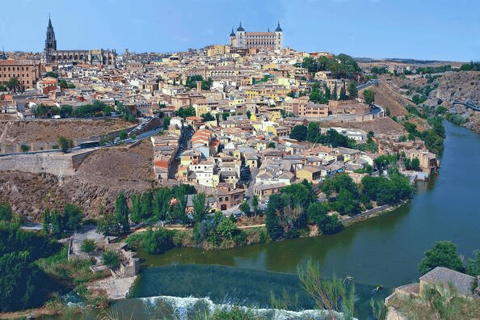
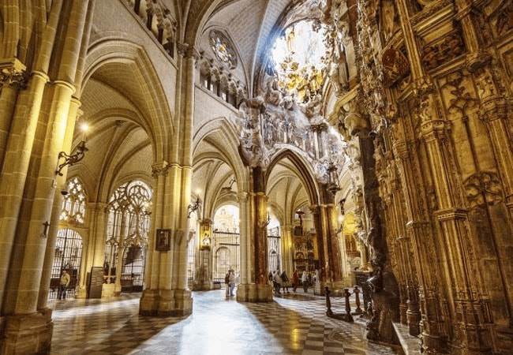
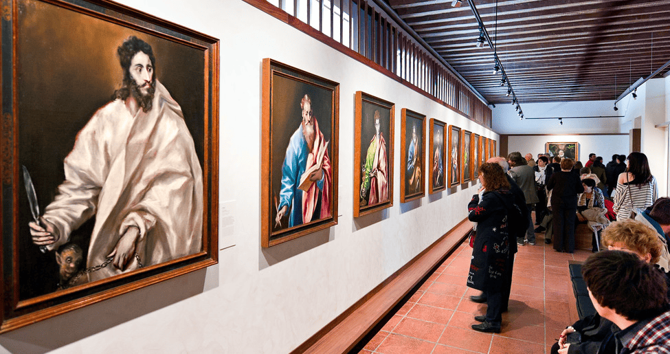

Cristianos, musulmanes y judíos. Seguidores de las tres religiones han convivido durante siglos y dejado huella en Toledo, una de las más interesantes y sorprendentes ciudades de España en la que es posible ver, en cuestión de pocos metros, una catedral gótica, una mezquita del siglo X y dos sinagogas.
Un lugar que llegó a ser Ciudad Imperial y cuya belleza supo reflejar El Greco en sus pinturas. Una ciudad de la que el viajero no se puede ir sin asomarse a sus miradores, subir a su Alcázar, perderse por sus callejuelas o ver un atardecer desde los Puentes de Alcántara o San Martín. A menos de 80 kilómetros de Madrid, merece la pena dedicarle más de una jornada para ver la ciudad iluminada por la noche y conocerla en profundidad.

Catedral de Toledo
El templo tiene orígenes remotos aunque como iglesia cristiana comenzó a construirse en el siglo XIII.
El templo se erigió sobre una mezquita musulmana que, anteriormente, fue una iglesia de los tiempos de Recaredo, en el siglo VI. El rey San Fernando y el arzobispo pusieron la primera piedra en el año 1226. Posteriormente, fueron terminándose las quince capillas de la girola.
Hacia el año 1300 se termina la nave del crucero, aunque las obras prosiguieron durante los dos siglos siguientes.

Museo del Greco
Este espacio acoge una amplia colección de lienzos de este artista del Siglo de Oro.
Inaugurado en 1910, el museo está situado en el barrio de la Judería de Toledo. El recinto consta de dos edificios: una casa con patio del siglo XVI, y una ampliación de principios del siglo XX, que coinciden en un jardín. En su interior se exponen numerosas obras de El Greco, sobre todo de la última época de este genio de la pintura, además de lienzos de otros pintores españoles de los siglox XVI y XVII, muebles de la misma época y cerámica de Talavera de la Reina.

Iglesia de Santo Tomé
Iglesia con torre mudéjar del siglo XIV. Guarda el famoso cuadro de El Greco "El entierro del Conde Orgaz".
La iglesia data del siglo XII, aunque fue reconstruida en su totalidad a principios del siglo XIV por encargo del Señor de Orgaz. La torre es uno de los mejores ejemplos del arte mudéjar toledano. En sus dos cuerpos superiores, de ladrillo, se abren grupos de dos y tres ventanales de arcos túmidos festoneados por otros lobulados.
En el interior se guarda uno de los cuadros más famosos de El Greco, "El entierro del Conde Orgaz", que se expone en una sala especial.